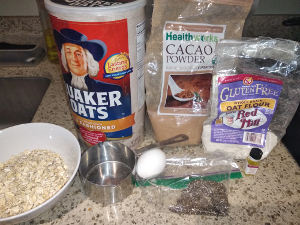
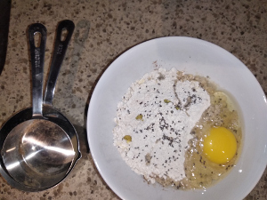
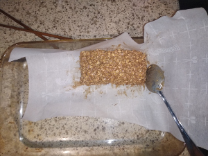
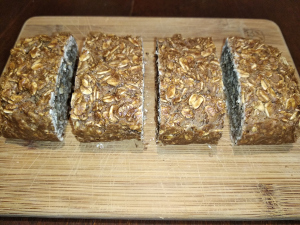

Oatmeal Bars
   
Ingredients: * 1 cup oatmeal, 1⁄2 cup oat flour, 2 eggs, cacao powder, banana, chia seeds
How to make it: * Mix and bake on 350 for 30 minutes
Nutrition: * 1 cup Oatmeal - calories 158, protein 6 g, fat 3.2 g,carbs 27 g * 1⁄2 Oat flour - 210 calories, protein 7.5 g, fat 4.8, carbs 34 g * 2 eggs - 144 calories, protein 12.6 g, fat 9.6 g, carbs 0.7 g * Banana - 105 calories, protein 1.3 g, fat 0.4 g, carbs 27 g * Total: calories 617, protein 27.4 g, fat 18 g, carbs 88 g
好吃又健康! / Hào chī yòu jiànkāng! / yummy and healthy!